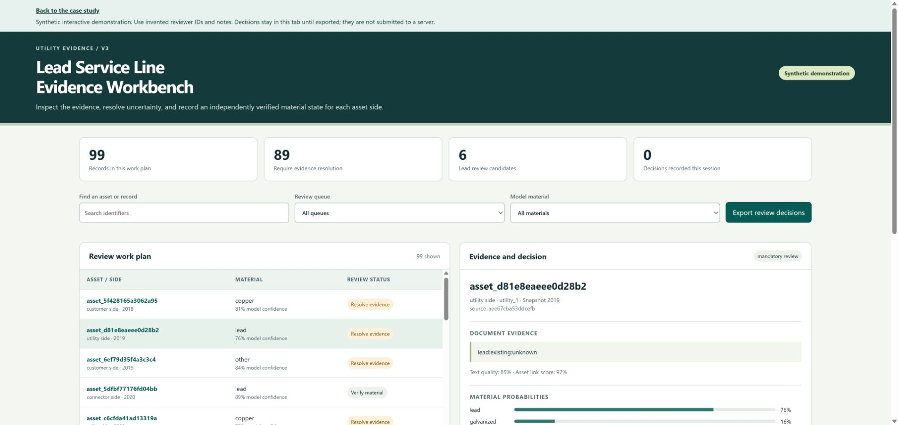
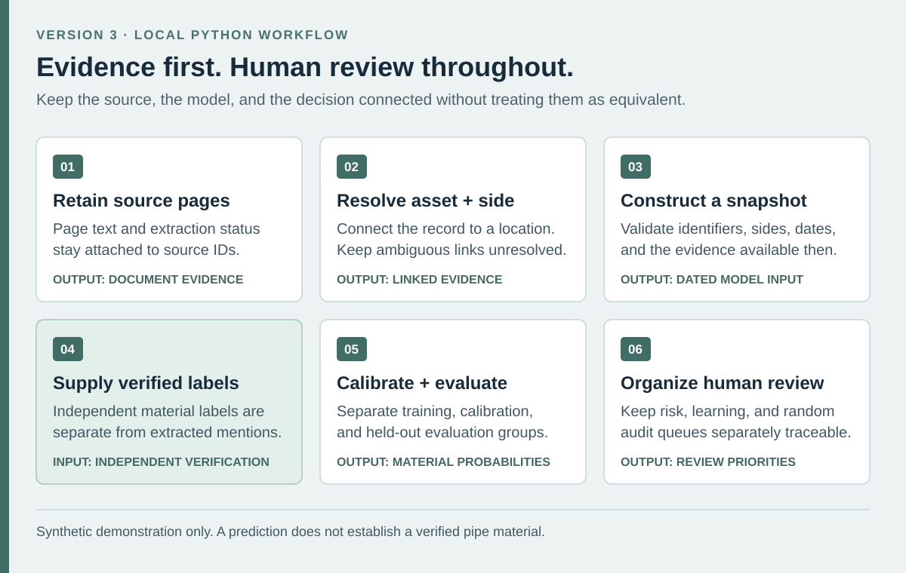

Lead Service Line Evidence Workbench
A local Python workflow that connects document evidence, material predictions, and traceable human review.
What I did
I developed a third version of the lead-service-line prototype with explicit contracts between page extraction, asset-side linking, model inputs, and reviewer decisions.
Result: The workbench produces a reproducible synthetic demonstration with evidence records, calibrated material predictions, and review queues that can be inspected locally.
Tools
- Python
- OCR
- pandas
- scikit-learn
- Grouped evaluation
- Data validation
The published data and demonstration are synthetic. This is not a deployed utility system, a regulatory determination, or evidence of field accuracy or municipal savings. Real use requires locally verified labels, independent validation, and accountable human review.
Project gallery
Synthetic demonstration figures; these do not show field performance. 1 images. Select an image to view it full size.
{kind=link}

Workflow and working demonstration
Inspect a synthetic review work plan
Explore 99 review records from a demonstration run using 480 invented asset-side snapshots. Filter queues, inspect evidence and material probabilities, and record a review decision.
Use invented reviewer IDs and notes. Decisions stay in the browser tab until exported and are not submitted to a server. This demonstration does not establish field performance.
Open interactive demonstration{kind=link}

Technical details
Independent project · Version 3 · Synthetic demonstration data
A material mention in a document is not enough to classify a service line. It must refer to the correct property, service side, and time, and unresolved evidence must remain visible.
- Preserve page-level text, extraction status, and source identifiers so reviewers can trace a material mention back to its evidence.
- Link evidence to an asset and service side, with ambiguous matches retained for review.
- Prepare dated snapshots and keep independently verified material labels separate from extracted mentions and model features.
- Fit text and structured-data models with separate calibration groups and evaluate on held-out groups.
- Use uncertainty and policy checks to create risk, learning, and random-audit queues; a prediction never becomes a verified material label.
- Record the configuration, model environment, and output provenance needed to reproduce a local run.